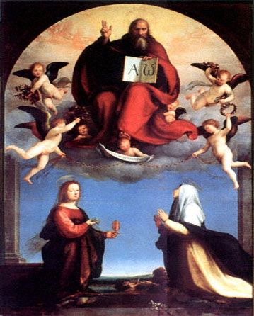
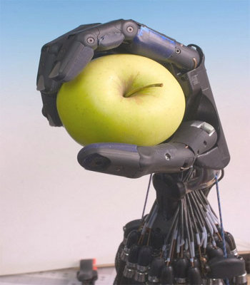
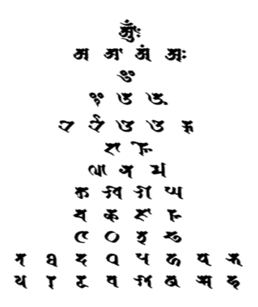
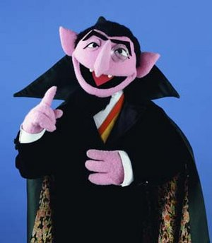

Back
| P A P E R S | |
|---|---|

Outlandish Men of GodIn which the author considers the presumptions of those who accredit words to God. |

AI and TelepresenceIn which the author explores the potential of creating practical artifical intelligence via training by telepresence. |

Subphonetic AlphabetIn which the auhtor explores the idea of a sub-phonetic means of writing. |

The Basis of CountingIn which author analytically compares counting using variant bases. |
| S K E T C H E S | |
|---|---|
Wiki WikiYou can read many of my writing sketches here. |
|
| Q U O T E S | |
|---|---|
|
|